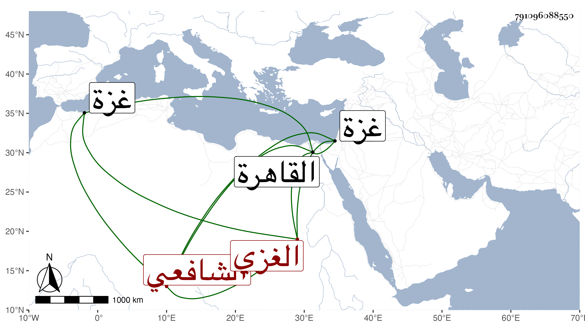

0902Sakhawi.DawLamic.ITO20230111-ara1.EIS1600.791096088550
Biography ID: 791096088550
593
حسين بن محمد بن حسن حسام الدين الغزي الشافعي ويعرف بابن الهرش بكسر الهاء ثم راء ساكنة وأخره معجمة . أخذ ببلده عن الشمس الحمصي وقدم القاهرة فأقام بها مدة أخذ فيها عن الجلال المحلي وغيره . واختص بالعضدي الصيرامي ، ونظم الشعر الجيد وتراسل مع الشهاب بن صالح وفضل بحيث كان الطلبة يراجعونه في تفهيم ما يشكل . مات فجأة في أول سنة أربع وسبعين بغزة وقد جاز الكهولة بيسير ومن نظمه :
| شكوت إليه عرق نسا | به أصبحت مزويا |
| وأصحابي تناسوني | وفيهم كنت مرعيا |
| ففي الحالين يا مولا | ي قد أصبحت منسيا |
